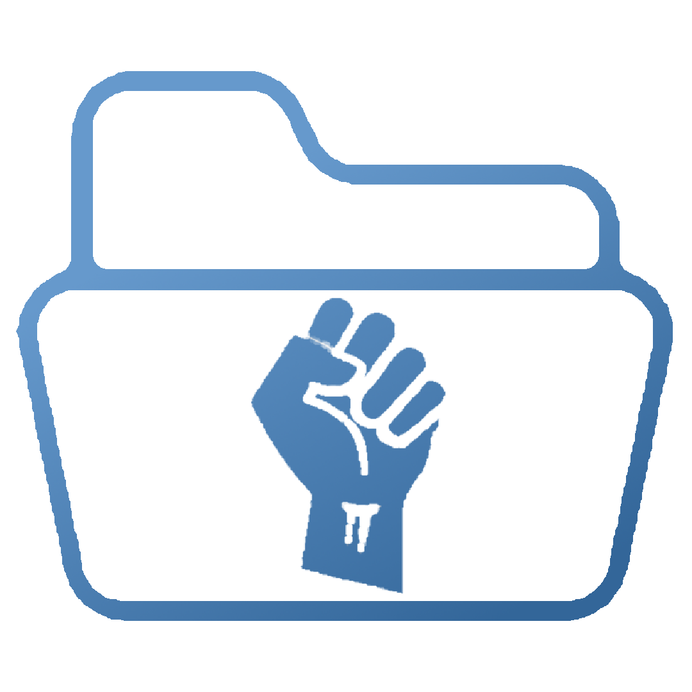

I am a senior social work student graduating in Spring 2026, with a strong passion for macro practice, public policy, and legislative systems. I try to embody the core values of social justice, integrity, and competence in every interaction I have.
After graduation, I plan to work with the South Carolina Department of Social Services before transitioning into political advocacy and, ultimately, public office. My long-term goal is to help build systems that are more just, transparent, and people-centered.
My Focuses
Policy Analysis
Researching and evaluating policy impacts through equity-focused frameworks.

Advocacy & Organizing
Supporting community efforts to improve systems and amplify the voices of those most affected.
Experience
Academic
University of South Carolina: College of Social Work
2023 — 2026
Bachelor of Social Work
Greenville Technical College
2018 — 2020
Associate of Arts
Dean's List | Club VP
Professional
Field Placement
Fall 2025 — Spring 2026
South Carolina Department of Social Services
Works with families and youth to ensure safety, permanency, and wellbeing.
Volunteer Work
2024-2025
Transitions Housing
2019-2022
Loaves and Fishes
2018-2019
Meals on Wheels
2012-2015
Salvation Army
Portfolio
The Council on Social Work Education’s (CSWE) competencies are designed to identify and promote ten essential areas of professional behavior that social workers are expected to demonstrate in practice. Collectively, these competencies emphasize ethical and professional conduct, the advancement of human rights and social justice, engagement in anti-racist and inclusive practice, the integration of research and policy into practice, and a commitment to ongoing self-reflection and self-care. Together, these competencies provide a framework for competent, accountable, and effective social work practice across diverse settings and client systems.
Select a competency
Competency 1
Demonstrate Ethical and Professional Behavior
This competency emphasizes the social worker’s need to engage in ethical decision-making, maintain professional boundaries, communicate effectively, and uphold the values and standards of the social work profession. It requires ongoing self-reflection, accountability, and adherence to the The National Association of Social Workers (NASW) Code of Ethics. The following artifacts demonstrate my development of ethical reasoning, professional identity, and self-awareness as foundational components of competent social work practice.
Artifact Identification
The first artifact I selected to demonstrate Competency 1 is the Volunteer Experience & Critical Reflection completed in SOWK 311: Foundations of Social Work Practice. The objective of this assignment was to engage in a volunteer experience within a social service setting and critically reflect on the ethical and professional responsibilities of a social worker. The assignment was structured to include a description of the agency and client population, an overview of the student’s role and responsibilities, and a reflective analysis of professional behavior and ethical considerations encountered during the experience. Through this artifact, I developed foundational knowledge of professional social work roles, ethical standards, and appropriate boundaries when working within client systems. The assignment strengthened my skills in self-reflection and self-regulation by requiring me to examine how my personal values, assumptions, and reactions could influence professional conduct. Additionally, this experience reinforced core social work values such as integrity, competence, and respect for the dignity and worth of the person, which are central to demonstrating ethical and professional behavior in social work practice.
The second artifact selected to demonstrate Competency 1 is the Interview Paper and Presentation assignment given in SOWK 331: Diversity and Social Justice in Contemporary Society. This assignment involved conducting a structured interview and presenting the information in a professional written format consistent with social work standards. As the paper had a particular focus on cultural identity, it required the use of respectful and person-centered language, attention to ethical considerations such as confidentiality and informed consent, and clear professional communication. Additionally, the assignment emphasized accountability in accurately representing the interviewee’s experiences while maintaining appropriate professional boundaries. This artifact demonstrates the application of ethical and professional behavior within a practice-oriented academic setting.
Integration and Application of Learning
The integration of learning related to Competency 1 has been essential in guiding my ethical and professional behavior within my field practicum setting. Drawing from coursework and applied assignments, I rely heavily on agency policies and ethical decision-making models when navigating practice situations. When any question arises, but especially those regarding ethical concerns, I follow a structured process that includes identifying the ethical dilemma, consulting relevant standards and procedures, considering pros and cons for clients, seeking supervision or consultation, and documenting decisions appropriately. This approach ensures that my actions prioritize client well-being, uphold professional integrity, and align with both legal and ethical expectations in practice.
Self-reflection and self-regulation are ongoing components of my professional development. In my practicum, I routinely engage in reflective practices to assess how my personal values, emotional responses, and lived experiences may influence my interactions with clients and peers. I actively manage personal boundaries by maintaining role clarity, using supervision to process challenging situations, and implementing strategies such as pausing, grounding, and consultation when emotional reactions arise. These practices help me remain client-centered while preventing boundary crossings or ethical conflicts.
Professional behavior is demonstrated consistently through my conduct, appearance, and communication. I adhere to agency expectations regarding dress and demeanor, and I communicate respectfully and clearly with clients, colleagues, and supervisors. Written documentation is completed in a timely, accurate, and professional manner, ensuring that records are objective and ethically sound. Additionally, I practice appropriate electronic communication by following agency protocols related to email, recordkeeping systems, and confidentiality.
Ethical use of technology is another critical consideration in my practicum. I apply knowledge of confidentiality, informed consent, and data security when using electronic systems, ensuring that client information is accessed and shared only when appropriate. I avoid the use of personal devices for client communication unless explicitly permitted and follow all agency guidelines related to digital documentation and information storage.
Finally, effective supervision and consultation play a vital role in ethical practice. I prepare for supervision by identifying questions, reflecting on client interactions, and remaining open to feedback. I actively engage in supervision as a collaborative process and follow up by implementing guidance received. This structured approach strengthens my ethical decision-making, accountability, and professional growth within my practicum setting.
Artifacts
Competency 2
Advance Human Rights and Social, Racial, Economic, and Environmental Justice
This competency emphasizes the ethical duty to challenge systemic oppression and promote equitable access to fundamental human rights Social work professionals must not only recognize how structural inequities shape client experiences and limit access to resources and safety, but they must also advocate for systemic change, support equitable policy reforms, and engage in practice that actively reduces structural barriers. Through advocacy, collaboration, and practice, social work professionals advance justice across micro, mezzo, and macro levels.
Artifact Identification
For this competency, the first artifact I selected is the Social Problem Paper for SOWK 441: Theories for Understanding Organizations and Communities. This assignment had students identify a social issue of interest and then analyze the issue using intersectional lenses. I chose to focus on food insecurity viewed as a social and policy problem. In this, I highlighted the statistics which showed a breakdown of food insecurity by population and identity, and then went into the historical context of systemic inequality caused by policies such as redlining and residential segregation. I also discussed current context of inflation and ineffective government assistance programs, as well as the limitations that community and grassroots organizations face in serving individuals and families.
The second artifact I selected was the Current Event Individual Facilitation from SOWK 331: Diversity and Social Justice in Contemporary Society. This assignment had students present a current event which had happened within the past few years and relate it to an assigned sub-area. My sub-area was racism and my specific topic was middle-eastern hate in the modern era. To present, I created a slideshow that gave definitions of racism, and explained then current events in that context, specifically focusing on growing bigotry following the 2001 twin tower attack. I also showed current search results and discussed the ongoing war in Gaza, again tying it back to the topic of racism.
Both of these assignments require historical context and an application of specific frameworks to put the topics into perspective. Critically analyzing the issues with these historical contexts in mind allows me to engage in reflective practice that advocates and advances the rights of marginalized groups.
Integration and Application of Learning
My field practicum primarily involves working with children, which requires a strong awareness of how oppression, discrimination, and historical trauma can impact client systems. Many children are affected by systemic inequities such as poverty, involvement with child welfare systems, racial and cultural marginalization, and family instability. These factors can contribute to heightened stress, behavioral challenges, distrust of systems, and difficulty forming secure relationships with professionals. In my practice I rely on my agency’s training modules and Guiding Principles and Standards (GPS) model, which emphasizes cultural sensitivity and ethical engagement. By internalizing these processes, I am able to maintain a supportive environment that acknowledges systemic impacts, while prioritizing the safety, permanency, and well-being of every client.
Social, economic, and environmental inequities often serve as precursors to agency involvement with client systems in my field practicum. While some situations may appear to stem from individual behaviors or choices, many are rooted in broader systemic failures such as poverty, housing instability, limited access to healthcare, inadequate education, and unsafe or under-resourced environments. These inequities can significantly increase the difficulty of raising and caring for children and may contribute to circumstances that result in allegations of abuse or neglect. In my practice, I apply this understanding by approaching each client system with the awareness that their circumstances are often shaped by factors beyond their control.
At both the micro and mezzo levels, advocacy for fundamental human rights is a core expectation within my field practicum setting. The agency consistently reinforces the importance of promoting client safety, permanency, and well-being through policies, practice standards, and service coordination. At the micro level, advocacy includes keeping children and families informed of the available resources and policies related to their healthcare, education, or housing needs. The mezzo level requires broader advocacy through collaboration with different levels of the agency, as well as partner organizations. Although my direct interactions with clients has been limited, I have applied these strategies by internalizing the agency’s advocacy-centered framework and integrating it into my developing professional identity.
At the macro level, reducing oppressive structural barriers requires policy and systemic changes that address the root causes of inequity affecting client systems in my field practicum setting. Key and essential changes include expanding access to affordable and quality childcare, improving equitable access to food and stable housing, and promoting fair employment practices and livable wages. Each of these would greatly improve families ability to meet basic needs and maintain stability, thus reducing agency involvement. As my field practicum is with a state-based government agency, opportunities for direct policy change are limited, due to bureaucratic constraints and regulatory oversight. However, I engage with macro-level systems by understanding how policies impact clients and by familiarizing myself with systemic gaps. I engage in civic engagement and advocacy for needed change, even outside of the scope of my practicum roles. I am committed to advancing social justice and promoting equitable distribution of goods and services in my future practice.
Artifacts
Competency 3
Engage Anti-Racism, Diversity, Equity, and Inclusion (ADEI) in Practice
This competency requires social work professional so recognize and navigate personal and systemic biases, while understanding clients’ cultural and social identities can affect how they experience care. Under this competency, social work professionals must not only practice cultural sensitivity, but also advocate for clients’ ability to openly share their personal identities, including age, race and ethnicity, sex and gender identity, sexuality, religion, cultural background, as well as the many other demographic traits, without fear of judgement or discrimination.
Artifact Identification
For this competency, the first artifact I selected is the Personal Cultural Identity Paper from SOWK 331: Diversity and Social Justice in Contemporary Society. This assignment focused on developing a critical understanding of my multiple social identities, how they intersect, and how they contribute to experiences of privilege and oppression. It also highlighted one’s awareness to their identities and features and varying degrees of visibility or difficulty in identifying them. Additionally, the assignment examined how individuals respond when confronted with triggering or challenging situations, encouraging reflective and intentional practice.
The second artifact I selected to demonstrate this competency is the Group Observation Part 1 and Part 2 from SOWK 411: Social Work Practice with Groups. This assignment focused on confronting biases regarding specific task and treatment groups, based solely on the brief description and prior assumptions. Part 2 built on this by observing the groups directly and critically comparing initial biases with actual group dynamics and behaviors.
Both of these assignments emphasize the role of identity and bias in social work practice. Critically analyzing my personal cultural identity allowed me to be more aware of how my intersecting identities influence my experiences, privilege, and capacity to effectively advocate. Similarly, reflecting on my biases allows me to intentionally confront and manage them, ensuring they do not interfere with ethical, respectful, and client-centered practice.
Integration and Application of Learning
Diversity is central to all interactions with client systems in my practicum. The agency works with individuals and families from varied backgrounds and circumstances, making cultural sensitivity and awareness of biases foundational to practice. Training modules focus extensively on recognizing and navigating biases, and shadowing experiences have shown me the importance of reassessing my perspectives in real time. My personal history, including experiences with abuse and neglect, requires ongoing reflection to prevent assumptions from influencing casework.
Social inequalities affect client systems in profound ways. Poverty, limited access to education, and systemic barriers can contribute to situations that bring families into agency involvement, though these factors alone do not cause abuse or neglect. Awareness of these inequities helps me approach families with empathy, avoiding judgment, and ensuring interventions are equitable and culturally informed.
Applying an intersectional lens allows for a nuanced understanding of oppression experienced by client systems. Clients’ diverse social identities interact in ways that influence access to resources and system engagement. These intersections of identity inform decisions made by the agency, including placements, referrals, and support systems, which ensures interventions are sensitive to the complex and overlapping needs of clients.
The agency employs the AWAKEN model to support self-awareness and bias management. AWAKEN stands for Awareness, Wonder, Ask, Knowing, and Engage thoughtfully, guiding practitioners to recognize assumptions, question perspectives, consult peers and supervisors for alternative viewpoints, integrate feedback, and reflect on the best approach for each individual client. I use this model to actively monitor and regulate personal biases, ensuring that my interactions remain ethical, client-centered, and culturally responsive.
Artifacts
Competency 4
Engage in Practice-Informed Research and Research-Informed Practice
This competency emphasizes the relationship between research and social work practice. It highlights how social work professionals must utilize empirical evidence and data to inform decision-making, while drawing from practice experience to identify gaps and improve interventions. By integrating research and practice, social work professionals contribute to effective, equitable, and evidence-based services.
Artifact Identification
The first artifact I selected for competency 4 is the final research proposal for a semester-long group project for SOWK 352: Social Work & Sci Inquiry. This assignment had groups pick a social or policy issue and conduct research on who’s affected and how. Also included in this assignment was conducting a literature review, to get a deeper, more established understanding of our problem topic. Finally, the last section of the assignment is conducting the actual reasearch, via the chosen methodology, and summarizing the data to present to the class as a whole. For this project, my group selected reproductive rights and the related affects on the health and equality of various populations. Our research methodology was a questionnaire survey with a sample size of approximately 300 individuals, which asked related questions about reproductive health decisions and outcomes, as well as about demographic information. The information we collected, through our survey and literary analysis, closely aligned with our assumptions on the issue as well as our proposed solutions.
The second artifact I selected is part 1 of the Policy Analysis Paper for SOWK 322: Social Policy Analysis. This assignment was also a semester-long project in which we selected a social or policy issue and researched it’s effects. For this assignment, I selected the issue of income inequality, and had a particular focus on the current policies which disproportionately benefit those who are already wealthy, while also causing further economic divide, leaving those who are already struggling financially behind.
Both of these assignments had a focus on researching and analyzing policy-based issues and how they impact the populations they effect. Both of these projects reflect the integration of research and practice which is central to this competency. The research proposal required the development and implementation of a methodology, while the policy analysis required critical interpretation of existing research data to evaluate systemic outcomes. Together these assignments act to strengthen the ability to assess the validity of research and apply findings to social work practice.
Integration and Application of Learning
In my practicum setting, access to current research and agency policy is readily available through structured training modules, instructor-led learning, and a searchable policy database. Through the use of agency-issued technology, I am able to access policies by number or keyword to review procedural guidelines and align my approach with agency expectations and requirements. During instructor-led learning, I was introduced to current policies, but also previous policy versions that showed their strengths and shortcomings, and how their revisions were informed by client impact. This display emphasized the need to evolve policy in response to client outcomes, rather than viewing them as static authority.
Utilizing literature from interprofessional and diverse research sources is essential in a practicum setting which intersects with various systems, including education, healthcare providers, legal entities, and community organizations. Through agency training and policy review, I have learned how previous policy failures have negatively impacted client systems, leading to needed revisions which better reflect research findings and interprofessional input. In my developing role, I remain attentive to how different systems interact with client families and consult agency guidelines and resources before drawing conclusions or forming recommendations.
Qualitative and quantitative data collection is foundational to informing and improving policies and programs within my practicum setting. The agency principle that “if it isn’t documented, it didn’t happen” reflects the importance of accurate and comprehensive record-keeping for accountability and program evaluation. Effective documentation requires large amounts of important data including who was involved, what occurred, when and where events happened, as well as relevant contextual details. This documentation, when combined with detailed assessment, contribute to the larger system which informs agency decisions and identifies patterns, which support policy revisions.
Artifacts
Competency 5
Engage in Policy Practice
This competency emphasizes the need for social work professionals to identify policies which affect the well-being, human rights, and justice at every level, be it local, state, federal, or global. Under this competency, social work professionals recognize the influences that affect policy, and show an understanding of the historical and current structures of social policies and their effects. Social work professionals must critique inequitable policies and advocate for their change.
Artifact Identification
The first artifact I selected for competency 5 is Comparative Policy Analysis & Best Policy Practices which was for SOWK 322: Social Policy Analysis. This assignment had students complete and present a comparative policy analysis in order to identify the best policies in a particular area of interest. Criteria which needed to be considered for this assignment included eligibility, benefits and services, funding, policy outcomes, and more. The topic my group chose for this assignment was reproductive rights, which was, and still is, a salient issue. The presentation viewed the rights, or lack thereof, currently in the United States and then compared those to the rights the UN recognizes, and further compared to our neighbor country, Canada. We specifically focused on comparing eligibility and resulting outcomes from being legally denied care, or being allowed to have access, and found that barriers to care resulted in higher rates of preventable deaths, while broad access resulted in better outcomes and more equitable service delivery.
The second artifact I selected is the Policy Analysis Paper Part 1, also for SOWK 322: Social Policy Analysis. This assignment had students write a formal policy analysis with the goal of developing related skills. Students selected and researched a social problem, and summarized current policy related to the problem, from rational, non-rational, and critical lenses. For this assignment, I selected the topic of income inequality. The ultimate conclusion I reached for this assignment is that addressing economic disparity is a complex issue that requires stronger regulation of large corporations as well as the facilitation of improved economic circulation by encouraging spending, rather than the accumulation of wealth, through the means of a progressive tax which is more related to the ratio of income, rather than arbitrary cuts and loopholes.
Both of these assignments greatly contributed to my skills and abilities related to the analysis and understanding of policy. They highlighted how meeting the needs of the general public requires ongoing advocacy and action. These assignments also allowed for a comparative analysis of how different societies and cultures utilize policy to help support their citizens.
Integration and Application of Learning
In my field practicum setting within a government agency, policy directly shapes service delivery, client engagement, and decision-making. Assessing policy involves identifying the scope, understanding eligibility, and evaluating both client access and impact. I apply this knowledge by reviewing relavent agency, state, and federal policies prior to engaging with case-related tasks, and by ensuring my actions allign with the procedural expectations and standards, while remaining attentive to client needs. I also consider how policiy limitations may impact clients’ abilikty to access services, especially when navigating placement, court experiences, or applying for government assistance programs. By better understanding these policies, I can support informed consent by explaining procedural steps and limitations, and assess how policy influences service outcomes
Advocating for policies which advance human rights and justice within my field practicum setting involves both direct and indirect strategies. Direct advocacy includes ensuring clients are well informed of their rights, available services, and limitations. Indirect advocacy involves raising concerns about policies which have the potential to create barriers or lead to inequitable outcomes. In general, agency policies are continuously assessed and revised based on research and intervention outcomes. Documetation of client interactions is key to identifying patterns in practice and accounting for those when in the policy revision process. My ability to directly affect policy change is very limited. However, I can contribute to a culture of accountability and flexibility when it comes to advocating for, and engaging with clients and their needs.